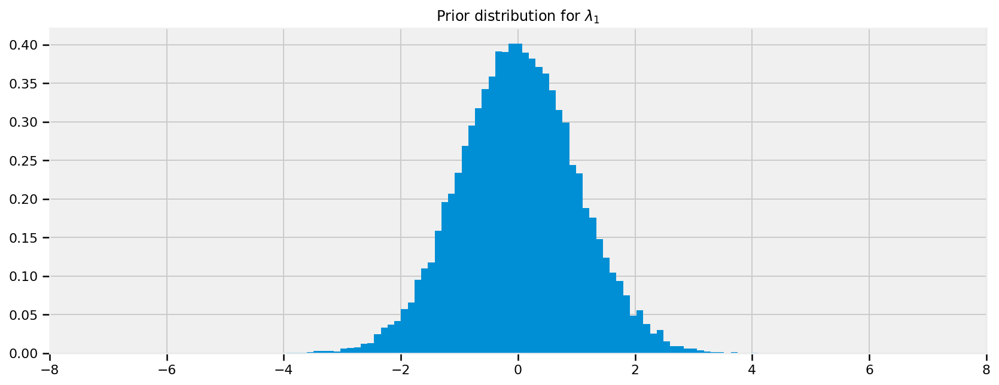
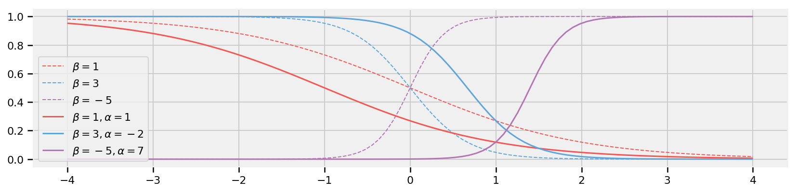
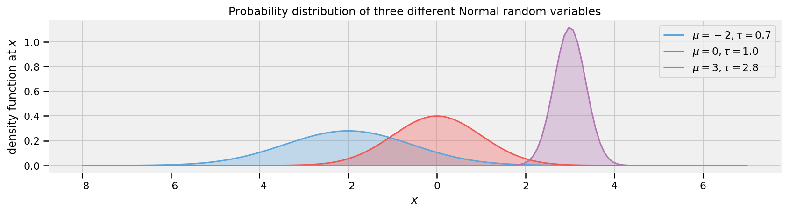
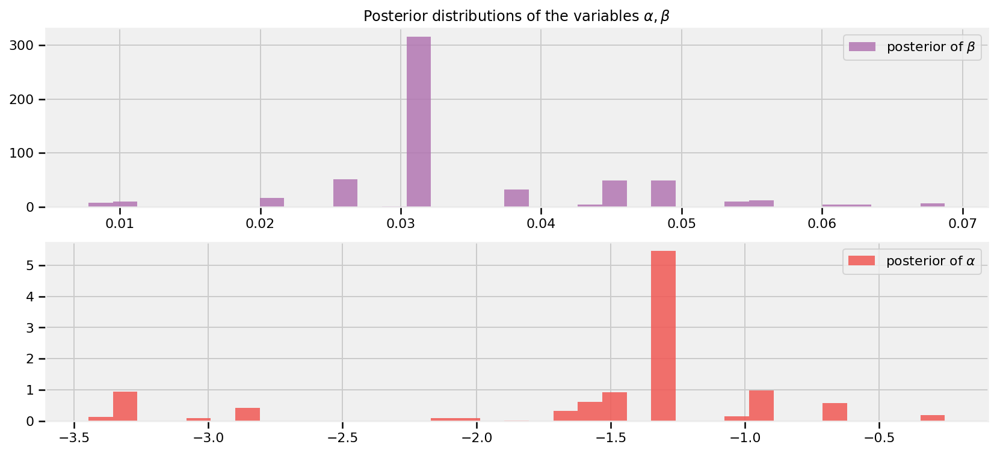
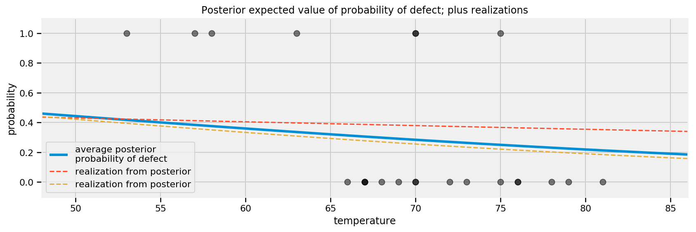
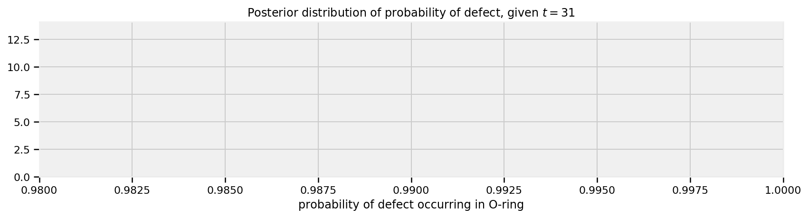

概率模型第二章 ： A little more on TFP
Tensorflow 概率模型学习，代码运行于Tensorflow 1.14，文字半机器翻译。
Probabilistic Programming and Bayesian Methods for Hackers Chapter 2
Table of Contents
- Dependencies & Prerequisites
- A little more on TFP
- TFP Variables
- Initializing Stochastic Variables
- Deterministic variables
- Combining with Tensorflow Core
- Including observations in the Model
- TFP Variables
- Modeling approaches
- Same story; different ending
- Example: Bayesian A/B testing
- A Simple Case
- Execute the TF graph to sample from the posterior
- A and B together
- Execute the TF graph to sample from the posterior
- An algorithm for human deceit
- The Binomial Distribution
- Example: Cheating among students
- Execute the TF graph to sample from the posterior
- Alternative TFP Model
- Execute the TF graph to sample from the posterior
- More TFP Tricks
- Example: Challenger Space Shuttle Disaster
- Normal Distributions
- Execute the TF graph to sample from the posterior
- What about the day of the Challenger disaster?
- Is our model appropriate?
- Execute the TF graph to sample from the posterior
- Normal Distributions
- Exercises
- References ___
本章介绍了更多的TFP语法和变量，以及如何从贝叶斯的角度思考如何建模系统。它还包含用于评估贝叶斯模型拟合优度的提示和数据可视化技术。
Dependencies & Prerequisites
#@title Imports and Global Variables (run this cell first) { display-mode: "form" }
"""
The book uses a custom matplotlibrc file, which provides the unique styles for
matplotlib plots. If executing this book, and you wish to use the book's
styling, provided are two options:
1. Overwrite your own matplotlibrc file with the rc-file provided in the
book's styles/ dir. See http://matplotlib.org/users/customizing.html
2. Also in the styles is bmh_matplotlibrc.json file. This can be used to
update the styles in only this notebook. Try running the following code:
import json
s = json.load(open("../styles/bmh_matplotlibrc.json"))
matplotlib.rcParams.update(s)
"""
from __future__ import absolute_import, division, print_function
#@markdown This sets the warning status (default is `ignore`, since this notebook runs correctly)
warning_status = "ignore" #@param ["ignore", "always", "module", "once", "default", "error"]
import warnings
warnings.filterwarnings(warning_status)
with warnings.catch_warnings():
warnings.filterwarnings(warning_status, category=DeprecationWarning)
warnings.filterwarnings(warning_status, category=UserWarning)
import numpy as np
import os
#@markdown This sets the styles of the plotting (default is styled like plots from [FiveThirtyeight.com](https://fivethirtyeight.com/)
matplotlib_style = 'fivethirtyeight' #@param ['fivethirtyeight', 'bmh', 'ggplot', 'seaborn', 'default', 'Solarize_Light2', 'classic', 'dark_background', 'seaborn-colorblind', 'seaborn-notebook']
import matplotlib.pyplot as plt; plt.style.use(matplotlib_style)
import matplotlib.axes as axes;
from matplotlib.patches import Ellipse
%matplotlib inline
import seaborn as sns; sns.set_context('notebook')
from IPython.core.pylabtools import figsize
#@markdown This sets the resolution of the plot outputs (`retina` is the highest resolution)
notebook_screen_res = 'retina' #@param ['retina', 'png', 'jpeg', 'svg', 'pdf']
%config InlineBackend.figure_format = notebook_screen_res
import tensorflow as tf
tfe = tf.contrib.eager
# Eager Execution
#@markdown Check the box below if you want to use [Eager Execution](https://www.tensorflow.org/guide/eager)
#@markdown Eager execution provides An intuitive interface, Easier debugging, and a control flow comparable to Numpy. You can read more about it on the [Google AI Blog](https://ai.googleblog.com/2017/10/eager-execution-imperative-define-by.html)
use_tf_eager = False #@param {type:"boolean"}
# Use try/except so we can easily re-execute the whole notebook.
if use_tf_eager:
try:
tf.enable_eager_execution()
except:
pass
import tensorflow_probability as tfp
tfd = tfp.distributions
tfb = tfp.bijectors
def evaluate(tensors):
"""Evaluates Tensor or EagerTensor to Numpy `ndarray`s.
Args:
tensors: Object of `Tensor` or EagerTensor`s; can be `list`, `tuple`,
`namedtuple` or combinations thereof.
Returns:
ndarrays: Object with same structure as `tensors` except with `Tensor` or
`EagerTensor`s replaced by Numpy `ndarray`s.
"""
if tf.executing_eagerly():
return tf.contrib.framework.nest.pack_sequence_as(
tensors,
[t.numpy() if tf.contrib.framework.is_tensor(t) else t
for t in tf.contrib.framework.nest.flatten(tensors)])
return sess.run(tensors)
class _TFColor(object):
"""Enum of colors used in TF docs."""
red = '#F15854'
blue = '#5DA5DA'
orange = '#FAA43A'
green = '#60BD68'
pink = '#F17CB0'
brown = '#B2912F'
purple = '#B276B2'
yellow = '#DECF3F'
gray = '#4D4D4D'
def __getitem__(self, i):
return [
self.red,
self.orange,
self.green,
self.blue,
self.pink,
self.brown,
self.purple,
self.yellow,
self.gray,
][i % 9]
TFColor = _TFColor()
def session_options(enable_gpu_ram_resizing=True, enable_xla=True):
"""
Allowing the notebook to make use of GPUs if they're available.
XLA (Accelerated Linear Algebra) is a domain-specific compiler for linear
algebra that optimizes TensorFlow computations.
"""
config = tf.ConfigProto()
config.log_device_placement = True
if enable_gpu_ram_resizing:
# `allow_growth=True` makes it possible to connect multiple colabs to your
# GPU. Otherwise the colab malloc's all GPU ram.
config.gpu_options.allow_growth = True
if enable_xla:
# Enable on XLA. https://www.tensorflow.org/performance/xla/.
config.graph_options.optimizer_options.global_jit_level = (
tf.OptimizerOptions.ON_1)
return config
def reset_sess(config=None):
"""
Convenience function to create the TF graph & session or reset them.
"""
if config is None:
config = session_options()
global sess
tf.reset_default_graph()
try:
sess.close()
except:
pass
sess = tf.InteractiveSession(config=config)
reset_sess()WARNING: Logging before flag parsing goes to stderr.
W0726 19:11:25.497503 140237485999936 lazy_loader.py:50]
The TensorFlow contrib module will not be included in TensorFlow 2.0.
For more information, please see:
* https://github.com/tensorflow/community/blob/master/rfcs/20180907-contrib-sunset.md
* https://github.com/tensorflow/addons
* https://github.com/tensorflow/io (for I/O related ops)
If you depend on functionality not listed there, please file an issue.A little more on TensorFlow and TensorFlow Probability
为了解释TensorFlow概率，值得研究使用Tensorflow张量的各种方法。在这里，我们介绍了Tensorflow图的概念，以及我们如何使用某些编码模式使我们的张量处理工作流更加快速和优雅。
TensorFlow图和Eager模式
TFP通过主张量流库实现了大部分繁重的工作。张量流库还包含许多熟悉的NumPy计算元素，并使用类似的表示法。当NumPy直接执行计算时（例如，当您运行+ b时），图形模式中的张量流会构建一个“计算图形”，跟踪您要对元素a和b执行+运算。只有在评估张量流表达式时才会进行计算 - tensorflow是惰性求值的。使用Tensorflow而不是NumPy的好处是图形可以实现数学优化（例如简化），通过自动微分进行梯度计算，将整个图形编译为C以机器速度运行，以及编译它以在GPU或TPU上运行。
从根本上说，TensorFlow使用图形进行计算，其中图形表示计算作为各个操作之间的依赖关系。在Tensorflow图的编程范例中，我们首先定义数据流图，然后创建TensorFlow会话以运行图的部分。 Tensorflow tf.Session（）对象运行图形以获取我们想要建模的变量。在下面的示例中，我们使用了一个全局会话对象sess，我们在上面的“Imports and Global Variables”部分中创建了它。
为了避免懒惰评估有时令人困惑的方面，Tensorflow的渴望模式会立即对结果进行评估，从而为使用NumPy提供更加相似的感觉。使用Tensorflow eager模式，您可以立即评估操作，而无需显式构建图形：操作返回具体值，而不是构建计算图形以便稍后运行。如果我们处于急切模式，我们会看到可以立即转换为NumPy数组等效的张量。 Eager模式使您可以轻松开始使用TensorFlow和调试模型。
TFP is essentially:
各种概率分布的张量流符号表达式的集合，它们被组合成一个大的计算图
一组推理算法，使用该图来计算概率和梯度。
出于实际目的，这意味着为了构建某些模型，我们有时必须使用核心Tensorflow。泊松采样的这个简单示例是我们如何使用图形和急切模式：
parameter = tfd.Exponential(rate=1., name="poisson_param").sample() # 构建一个指数分布并进行采样
rv_data_generator = tfd.Poisson(parameter, name="data_generator") # 构建一个泊松分布
data_generator = rv_data_generator.sample() # 取得泊松分布的样本
if tf.executing_eagerly():
data_generator_ = tf.contrib.framework.nest.pack_sequence_as(data_generator,[t.numpy() if tf.contrib.framework.is_tensor(t) else t for t in tf.contrib.framework.nest.flatten(data_generator)])
else:
data_generator_ = sess.run(data_generator)
print("Value of sample from data generator random variable:", data_generator_)Value of sample from data generator random variable: 1.0在图形模式下，Tensorflow会自动将任何变量分配给图形;然后可以在会话中对它们进行评估，也可以在急切模式下使用它们。如果在会话已关闭或处于最终状态时尝试定义变量，则会出现错误。在“导入和全局变量”部分中，我们定义了一种特定类型的会话，称为InteractiveSession。全局InteractiveSession的这个定义允许我们通过shell或笔记本以交互方式访问我们的会话变量。
使用全局会话的模式，我们可以递增地构建图形并运行它的子集以获得结果。
热切执行进一步简化了我们的代码，无需显式调用会话功能。实际上，如果您尝试在急切模式下运行图形模式语义，您将收到如下错误消息：
AttributeError: Tensor.graph is meaningless when eager execution is enabled.As mentioned in the previous chapter, we have a nifty tool that allows us to create code that’s usable in both graph mode and eager mode. The custom evaluate() function allows us to evaluate tensors whether we are operating in TF graph or eager mode. A generalization of our data generator example above, the function looks like the following:
def evaluate(tensors):
if tf.executing_eagerly():
return tf.contrib.framework.nest.pack_sequence_as(
tensors,
[t.numpy() if tf.contrib.framework.is_tensor(t) else t
for t in tf.contrib.framework.nest.flatten(tensors)])
with tf.Session() as sess:
return sess.run(tensors)Each of the tensors corresponds to a NumPy-like output. To distinguish the tensors from their NumPy-like counterparts, we will use the convention of appending an underscore to the version of the tensor that one can use NumPy-like arrays on. In other words, the output of evaluate() gets named as variable + _ = variable_ . Now, we can do our Poisson sampling using both the evaluate() function and this new convention for naming Python variables in TFP.
# 定义我们的假设
parameter = tfd.Exponential(rate=1., name="poisson_param").sample()
# 转换为numpy
[ parameter_ ] = evaluate([ parameter ])
print("Sample from exponential distribution before evaluation: ", parameter)
print("Evaluated sample from exponential distribution: ", parameter_)Sample from exponential distribution before evaluation: Tensor("poisson_param_1/sample/Reshape:0", shape=(), dtype=float32)
Evaluated sample from exponential distribution: 0.34844726更一般地说，我们可以使用我们的evaluate()函数在Tensorflow tensor数据类型和我们可以运行操作的数据类型之间进行转换：
[
parameter_,
data_generator_,
] = evaluate([
parameter,
data_generator,
])
print("'parameter_' evaluated Tensor :", parameter_)
print("'data_generator_' sample evaluated Tensor :", data_generator_)'parameter_' evaluated Tensor : 0.7298943
'data_generator_' sample evaluated Tensor : 0.0在TensorFlow中编程的一般经验法则是，如果您需要进行任何需要NumPy函数的类似数组的计算，则应在TensorFlow中使用它们的等价物。这种做法是必要的，因为NumPy只能产生常数值，但TensorFlow张量是计算图的动态部分。如果以错误的方式混合和匹配这些，通常会出现有关不兼容类型的错误。
TFP Distributions
让我们看看tfp.distributions如何工作。
TFP使用分布子类来表示随机随机变量。当满足以下条件时，变量是随机的：即使您知道变量的参数和组件的所有值，它仍然是随机的。此类别中包括Poisson，Uniform和Exponential类的实例。
您可以从随机变量中抽取随机样本。当您绘制样本时，这些样本将成为tensorflow.Tensors从该点开始具有确定性。快速的心理检查以确定某些东西是否具有确定性：如果我知道创建变量foo的所有输入，我可以计算foo的值。您可以通过下面讨论的各种方式添加，减去和操纵张量。这些操作几乎总是确定的。
初始化分布
初始化随机变量或随机变量需要一些特定于类的参数来描述分布的形状，例如位置和比例。例如：
some_distribution = tfd.Uniform(0., 4.)初始化随机或随机的均匀分布，其下限为0，上限为4.在分布上调用sample（）会返回一个张量，该张量将从该点开始确定性地表现：
sampled_tensor = some_distribution.sample()下一个例子说明了当我们说分布是随机的但是张量是确定性时我们的意思：
derived_tensor_1 = 1 + sampled_tensor
derived_tensor_2 = 1 + sampled_tensor # equal to 1
derived_tensor_3 = 1 + some_distribution.sample()
derived_tensor_4 = 1 + some_distribution.sample() # different from 3前两行产生相同的值，因为它们引用相同的采样张量。最后两行可能产生不同的值，因为它们指的是从相同分布中提取的独立样本。
要定义多变量分布，只需传入具有您希望输出在创建分布时的形状的参数。例如：
betas = tfd.Uniform([0., 0.], [1., 1.])使用batch_shape（2，）创建分布。现在，当您调用betas.sample（）时，将返回两个值而不是一个。您可以在TFP文档中阅读有关TFP形状语义的更多信息，但本书中的大多数用法应该是不言自明的。
确定变量
我们可以创建一个确定性分布，类似于我们如何创建随机分布。我们只是从Tensorflow Distributions中调用Deterministic类，并传递我们想要的确定性值
deterministic_variable = tfd.Deterministic(name="deterministic_variable", loc=some_function_of_variables)调用tfd.Deterministic对于创建始终具有相同值的分布非常有用。但是，在TFP中使用确定性变量的更常见模式是从分布中创建张量或样本：
lambda_1 = tfd.Exponential(rate=1., name="lambda_1") #随机变量
lambda_2 = tfd.Exponential(rate=1., name="lambda_2") #随机变量
tau = tfd.Uniform(name="tau", low=0., high=10.) #随机变量
# 因为我们在采样后得到lambda的结果，所以确定性变量
new_deterministic_variable = tfd.Deterministic(name="deterministic_variable", loc=(lambda_1.sample() + lambda_2.sample()))
new_deterministic_variable<tfp.distributions.Deterministic 'deterministic_variable/' batch_shape=[] event_shape=[] dtype=float32>在前一章的文本消息示例中可以看到确定性变量的使用。回想一下λ的模型看起来像
\[ \lambda = \begin{cases}\lambda_1 & \text{if } t \lt \tau \cr \lambda_2 & \text{if } t \ge \tau \end{cases} \]
And in TFP code:
# 构建图
# 日子
n_data_points = 5 # in CH1 we had ~70 data points
idx = np.arange(n_data_points)
# 对于n_data_points样本，如果采样tau> = day值，则从lambda_2中选择，否则为lambda_1
rv_lambda_deterministic = tfd.Deterministic(tf.gather([lambda_1.sample(), lambda_2.sample()],
indices=tf.cast(
tau.sample() >= idx,tf.int32)))
lambda_deterministic = rv_lambda_deterministic.sample()
# Execute graph
[lambda_deterministic_] = evaluate([lambda_deterministic])
# Show results
print("{} samples from our deterministic lambda model: \n".format(n_data_points), lambda_deterministic_ )5 samples from our deterministic lambda model:
[0.24393924 0.24393924 0.24393924 0.24393924 0.24393924]显然，如果已知τ，\(\lambda_1\)，λ1和λ2，那么λ是完全已知的，因此它是一个确定性变量。我们在这里使用索引在适当的时间从λ1切换到λ2
包括模型中的观察
在这一点上，它可能看起来不像，但我们已经完全指定了我们的先验。例如，我们可以提出并回答诸如“我之前分配\(\lambda_1\)的内容是什么样的问题？”之类的问题。
为此，我们将从分发中进行抽样。方法.sample()有一个非常简单的作用：从给定的分布中获取数据点。然后我们可以评估生成的张量以获得类似NumPy数组的对象。
# 定义观测变量为指数分布
rv_lambda_1 = tfd.Exponential(rate=1., name="lambda_1")
lambda_1 = rv_lambda_1.sample(sample_shape=20000)
# 执行图
[ lambda_1_ ] = evaluate([ lambda_1 ])
# 可视化先验分布
plt.figure(figsize(12.5, 5))
plt.hist(lambda_1_, bins=70, normed=True, histtype="stepfilled")
plt.title(r"Prior distribution for$\lambda_1$")
plt.xlim(0, 8)
# 定义观测变量为正态分布
rv_lambda_1 = tfd.Normal(loc=0,scale=1,name="lambda_1")
lambda_1 = rv_lambda_1.sample(sample_shape=20000)
# 执行图
[ lambda_1_ ] = evaluate([ lambda_1 ])
# 可视化先验分布
plt.figure(figsize(12.5, 5))
plt.hist(lambda_1_, bins=70, normed=True, histtype="stepfilled")
plt.title(r"Prior distribution for$\lambda_1$")
plt.xlim(-8, 8)
为了在第一章的符号中描述这一点，虽然这是对符号的轻微滥用，但我们已经指定了\(P(A)\)。我们的下一个目标是将数据/证据/观察结果\(X\)包含在我们的模型中。
有时我们可能希望将分布的属性与观察数据的属性相匹配。为此，我们从数据本身获取分布参数。在此示例中，泊松率（平均事件数）在数据平均值上显式设置为1：
# 构建图
data = tf.constant([10., 5.], dtype=tf.float32)
rv_poisson = tfd.Poisson(rate=1./tf.reduce_mean(data))
poisson = rv_poisson.sample()
# Execute graph
[ data_, poisson_, ] = evaluate([ data, poisson ])
# Show results
print("two predetermined data points: ", data_)
print("\n mean of our data: ", np.mean(data_))
print("\n random sample from poisson distribution \n with the mean as the poisson's rate: \n", poisson_)two predetermined data points: [10. 5.]
mean of our data: 7.5
random sample from poisson distribution
with the mean as the poisson's rate:
1.0建模方法
对贝叶斯建模的良好开端思考是考虑如何生成数据。将自己置于无所不知的位置，并尝试想象如何重新创建数据集。
在上一章中，我们研究了文本消息数据。我们首先询问我们的观察结果如何产生：
我们首先想到“描述这个计数数据的最佳随机变量是什么？”泊松随机变量是一个很好的候选变量，因为它可以表示计数数据。因此，我们模拟从泊松分布中采样的短信的数量。
接下来，我们认为，“好吧，假设短信是泊松分布的，那么泊松分布需要什么？”那么，泊松分布有一个参数\(\lambda\)。
我们知道\(\lambda\)吗？不。实际上，我们怀疑有两个\(\lambda\)值，一个用于早期行为，一个用于后面的行为。我们不知道行为何时切换，但称切换点为\(\tau\)。
这两个\(\lambda\)的好分布是什么？指数是好的，因为它将概率分配给正实数。那么指数分布也有一个参数，称之为\(\alpha\)。
我们知道参数\(\alpha\)可能是什么吗？没有。此时，我们可以继续并将分配分配给\(\alpha\)，但是一旦达到设定的无知水平，最好停止：而我们先前有关于\(\lambda\)的信念，（“它可能会改变随着时间的推移，“它可能在10到30”之间，等等，我们对\(\alpha\)没有任何强烈的信念。所以最好停在这里。
那么\(\alpha\)有什么好处呢？我们认为\(\lambda\)s在10-30之间，所以如果我们将\(\alpha\)设置得非常低（相当于较高值的较大概率），我们就不会反映我们之前的好。类似的，太高的阿尔法也错过了我们先前的信念。反映我们信念的\(\alpha\)的一个好主意是设置值，以便\(\alpha\)的\(\lambda\)的平均值等于我们观察到的平均值。这在最后一章中有所体现。
我们对\(\tau\)可能发生的时间没有专家意见。所以我们假设\(\tau\)来自整个时间跨度的离散均匀分布。
下面我们给出了这个的图形可视化，其中箭头表示父子关系。 （由Daft Python库提供）

TFP和其他概率编程语言旨在告诉这些数据生成故事。更一般地说，B。Cronin写道[2]：
概率编程将解读数据的叙述性解释，这是商业分析的圣杯之一，也是科学说服的无名英雄。人们从故事的角度思考 - 因此轶事的不合理的力量推动决策，有充分根据或没有。但现有的分析很大程度上无法提供这种故事;相反，数字似乎凭空出现，人们在权衡他们的选择时几乎没有因果关系。
相同的故事;不同的结局。
有趣的是，我们可以通过重述故事来创建新数据集。
例如，如果我们颠倒上述步骤，我们可以模拟数据集的可能实现。
1 通过从\(\text {DiscreteUniform}（0,80）\)中抽样来指定用户行为的切换时间：
tau = tf.random_uniform(shape=[1], minval=0, maxval=80, dtype=tf.int32)
[ tau_ ] = evaluate([ tau ])
print("Value of Tau (randomly taken from DiscreteUniform(0, 80)):", tau_)Value of Tau (randomly taken from DiscreteUniform(0, 80)): [58]2 绘制出\(\lambda_1\)和\(\lambda_2\)从\(\text{Gamma}(\alpha)\)分布:
注意：伽玛分布是指数分布的推广。形状参数\(α= 1\)和尺度参数\(β\)的伽玛分布是指数（\(β\)）分布。在这里，我们使用伽玛分布比我们用指数建模时具有更大的灵活性。我们可以返回远大于\(1\)的值（即，在每日短信计数中会出现的数字种类），而不是返回\(0\)和\(1\)之间的值。
alpha = 1./8.
lambdas = tfd.Gamma(concentration=1/alpha, rate=0.3).sample(sample_shape=[2])
[ lambda_1_, lambda_2_ ] = evaluate( lambdas )
print("Lambda 1 (randomly taken from Gamma(α) distribution): ", lambda_1_)
print("Lambda 2 (randomly taken from Gamma(α) distribution): ", lambda_2_)Lambda 1 (randomly taken from Gamma(α) distribution): 57.477856
Lambda 2 (randomly taken from Gamma(α) distribution): 23.4237613 在τ之前的几天，通过从Poi（λ1）采样来表示用户接收的短信计数，并且在τ之后的几天表示来自Poi（λ2）的样本。例如：
data = tf.concat([tfd.Poisson(rate=lambda_1_).sample(sample_shape=tau_),
tfd.Poisson(rate=lambda_2_).sample(sample_shape= (80 - tau_))], axis=0)
days_range = tf.range(80)
[ data_, days_range_ ] = evaluate([ data, days_range ])
print("Artificial day-by-day user SMS count created by sampling: \n", data_)Artificial day-by-day user SMS count created by sampling:
[62. 65. 63. 63. 61. 70. 61. 49. 58. 78. 60. 51. 54. 61. 54. 59. 64. 54.
68. 54. 45. 59. 71. 55. 51. 37. 52. 51. 55. 71. 60. 47. 59. 58. 61. 53.
49. 44. 51. 56. 67. 64. 71. 52. 72. 48. 55. 62. 58. 49. 52. 62. 57. 56.
52. 61. 69. 46. 29. 23. 20. 27. 26. 25. 20. 27. 23. 27. 30. 25. 21. 29.
24. 17. 39. 25. 30. 22. 22. 22.]4 Plot the artificial dataset:
4 画出人造的数据
plt.bar(days_range_, data_, color=TFColor[3])
plt.bar(tau_ - 1, data_[tau_ - 1], color="r", label="user behaviour changed")
plt.xlabel("Time (days)")
plt.ylabel("count of text-msgs received")
plt.title("Artificial dataset")
plt.xlim(0, 80)
plt.legend()
我们的虚构数据集看起来不像我们观察到的数据集是正常的：它的概率确实很小。 TFP的引擎旨在找到最大化此概率的良好参数\(\lambda_i, \tau\)
生成人工数据集的能力是我们建模的一个有趣的副作用，我们将看到这种能力是贝叶斯推理的一个非常重要的方法。我们在下面生成一些数据集：
def plot_artificial_sms_dataset():
tau = tf.random_uniform(shape=[1],
minval=0,
maxval=80,
dtype=tf.int32)
alpha = 1./8.
lambdas = tfd.Gamma(concentration=1/alpha, rate=0.3).sample(sample_shape=[2])
[ lambda_1_, lambda_2_ ] = evaluate( lambdas )
data = tf.concat([tfd.Poisson(rate=lambda_1_).sample(sample_shape=tau),
tfd.Poisson(rate=lambda_2_).sample(sample_shape= (80 - tau))], axis=0)
days_range = tf.range(80)
[
tau_,
data_,
days_range_,
] = evaluate([
tau,
data,
days_range,
])
plt.bar(days_range_, data_, color=TFColor[3])
plt.bar(tau_ - 1, data_[tau_ - 1], color="r", label="user behaviour changed")
plt.xlim(0, 80)
plt.figure(figsize(12.5, 8))
for i in range(4):
plt.subplot(4, 1, i+1)
plot_artificial_sms_dataset()
稍后我们将看到我们如何使用它来进行预测并测试模型的适当性。
示例：贝叶斯A / B测试
A / B测试是用于确定两种不同处理之间的有效性差异的统计设计模式。例如，一家制药公司对药物A与药物B的有效性感兴趣。该公司将在其试验的某些部分测试药物A，在另一部分测试药物B（该部分通常是1/2，但我们将放松这个假设）。在进行了足够的试验后，内部统计人员筛选数据以确定哪种药物产生了更好的结果。
同样，前端Web开发人员对他们的网站设计产生更多销售额或其他一些感兴趣的指标感兴趣。他们将一部分访问者路由到站点A，将另一部分路由到站点B，并记录访问是否产生了销售。记录数据（实时），然后进行分析。
通常，实验后分析使用称为假设检验的方法进行，例如平均值测试或比例差异测试。这通常会误解为“Z分数”，甚至更令人困惑的“p值”（请不要问）。如果您已经学过统计学课程，那么您可能已经学过这种技术（尽管不一定学习这种技术）。如果你像我一样，你可能会对他们的推导感到不舒服 - 好的：贝叶斯方法解决这个问题要自然得多。
一个简单的例子
由于这是一本黑客书，我们将继续使用web-dev示例。目前，我们只关注网站A的分析。假设在显示站点A时最终从站点购买的用户有一些真正的\(0 \lt p_A \lt 1\)概率。这是网站A的真正有效性。目前，我们不知道这个数量
假设站点A显示为\(N\)人，并且从站点购买\(n\)人。有人可能会急忙得出结论：\(p_A = \frac{n}{N}\)。不幸的是，观察频率\(\frac{n}{N}\)不一定等于\(p_A\)- 观察频率与事件的真实频率之间存在差异。真实频率可以解释为事件发生的概率。例如，在6面骰子上滚动1的真实频率是\(\frac{1}{6}\)。了解事件的真实频率，例如：
- 购买用户的比例
- 社会属性的频率
- 有猫等互联网用户的百分比
是我们对大自然提出的常见要求。不幸的是，通常现实中充满了噪音和干扰隐藏了真实频率，我们必须从观察到的数据中推断它。
然后观察到的频率是我们观察到的频率：比如摇动色子100次，你可以观察到20个1.观察到的频率0.2，与真实频率不同，\(\frac{1}{6}\)。我们可以使用贝叶斯统计来使用适当的先验和观测数据来推断真实频率的可能值。
关于我们的A / B示例，我们有兴趣使用我们所知的\(N\)（管理的总试验次数）和\(n\)（转换次数）来估算\(p_A\)，买家的真实频率， 可能。
要设置贝叶斯模型，我们需要为我们的未知量分配先验分布先验，我们认为\(p_A\)可能是什么？对于这个例子，我们对\(p_A\)没有强烈的信念，所以现在，让我们假设\(p_A\)统一超过\([0,1]\)：
reset_sess()
# 设定一个平均分布
rv_p = tfd.Uniform(low=0., high=1., name='p')如果我们有更强烈的置信度，我们可以在上面的内容中表达它们。
对于此示例，请考虑\(p_A = 0.05\)，\(N = 1500\)用户访问了站点A，我们将模拟用户是否进行了购买。为了从\(N\)试验中模拟这个，我们将使用伯努利分布：如果\(X \ \sim \text{Ber}（p）\)，则\(X\)为1，概率为\(p\)，0为概率\(1 - p\)。当然，在实践中我们不知道\(p_A\)，但我们将在此处使用它来模拟数据。我们可以假设我们可以使用以下生成模型：
\[ \begin{aligned} p &\sim \text{Uniform}[\text{low}=0,\text{high}=1) \\ X\ &\sim \text{Bernoulli}(\text{prob}=p) \\ \text{for } i &= 1\ldots N:\text{ Users} \\ X_i\ &\sim \text{Bernoulli}(p_i) \end{aligned} \]
reset_sess()
#set constants
prob_true = 0.05 # 假设P_a是0.05
N = 1500
# 样本N来自 Ber(0.05).
# 每个变量有0.05的概率为1
# 这是数据生成的步骤
occurrences = tfd.Bernoulli(probs=prob_true).sample(sample_shape=N, seed=10) # 生成1500的样本
occurrences_sum = tf.reduce_sum(occurrences) # 求和
occurrences_mean = tf.reduce_mean(tf.cast(occurrences,tf.float32)) # 求平均
[
occurrences_,
occurrences_sum_,
occurrences_mean_,
] = evaluate([
occurrences,
occurrences_sum,
occurrences_mean,
])
print("Array of {} Occurences:".format(N), occurrences_)
print("(Remember: Python treats True == 1, and False == 0)")
print("Sum of (True == 1) Occurences:", occurrences_sum_)Array of 1500 Occurences: [0 0 0 ... 0 1 0]
(Remember: Python treats True == 1, and False == 0)
Sum of (True == 1) Occurences: 76观测频率如下:
# Occurrences.mean is equal to n/N.
print("A组中观察到的频率是多少? %.4f" % occurrences_mean_)
print("他是否等于正式的频率? %s" % (occurrences_mean_ == prob_true))A组中观察到的频率是多少? 0.0507
他是否等于正式的频率? False我们可以将我们的伯努利分布和我们观察到的事件组合成基于二者的对数概率函数。
def joint_log_prob(occurrences, prob_A):
"""
联合对数概率优化函数
Args:
事件: 一个二进制数组 (0 & 1), 表现观测频率
prob_A: 标量估计出现1的概率
Returns:
来自所有先验和条件分布的联合对数概率之和
"""
rv_prob_A = tfd.Uniform(low=0., high=1.) # 这里直接把概率P_A的分布设置为均匀分布
rv_occurrences = tfd.Bernoulli(probs=prob_A) # 概率为P_A的二项分布
return (rv_prob_A.log_prob(prob_A)+ tf.reduce_sum(rv_occurrences.log_prob(occurrences)))概率推断的目标是找到可以解释您观察到的数据的模型参数。 TFP通过使用joint_log_prob函数评估模型参数来执行概率推断。 joint_log_prob的参数是数据和模型参数 - 用于在joint_log_prob函数本身中定义的模型。该函数返回参数化模型的联合概率的对数，该模型按照输入参数生成观察数据。
所有的 joint_log_prob 函数都有共同的结构:
该函数需要一组输入来评估。每个输入都是观察值或模型参数。
joint_log_prob函数使用概率分布来定义用于评估输入的模型。这些分布测量输入值的可能性。 （按照惯例，测量变量foo的可能性的分布将被命名为rv_foo以注意它是一个随机变量。）我们在joint_log_prob函数中使用两种类型的分布：先前的分布测量输入值的可能性。先前的分配决不依赖于输入值。每个先前分布都测量单个输入值的可能性。每个未知变量 - 一个未被直接观察到的变量 - 需要相应的先验变量。关于哪些值可能合理的信念决定了先前的分布。选择先验可能很棘手，因此我们将在第6章深入介绍。
条件分布测量给定其他输入值的输入值的可能性。通常，条件分布返回给定模型中参数的当前猜测的观察数据的可能性，p（observed_data | model_parameters）。
最后，我们计算并返回输入的联合对数概率。联合对数概率是来自所有先验分布和条件分布的对数概率的总和。 （由于数值稳定性的原因，我们采用对数概率之和而不是直接乘以概率：计算机中的浮点数不能表示计算联合对数概率所需的非常小的值，除非它们在对数空间中。）概率之和实际上是一个非标准化的密度;虽然所有可能输入的概率总和可能不等于1，但概率之和与真实概率密度成正比。这种比例分布足以估计可能输入的分布。
让我们将这些术语映射到上面的代码中。在这个例子中，输入值是occurrence的观察值和prob_A的未知值。 joint_log_prob获取prob_A的当前猜测并回答，如果prob_A是occurrence的概率，数据的可能性有多大。答案取决于两个分布：
先前的分布
rv_prob_A表示prob_A的当前值本身的可能性。如果
prob_A是伯努利分布的概率，则条件分布rv_occurrences表示“发生”的可能性。
这些概率的对数之和是 联合对数概率。
joint_log_prob与tfp.mcmc模块一起使用时特别有用。马尔可夫链蒙特卡罗（MCMC）算法通过对未知输入值进行有根据的猜测并计算这组参数的可能性来进行。 （我们将在第3章中讨论它是如何进行这些猜测的。）通过多次重复此过程，MCMC构建了可能参数的分布。构建此分布是概率推理的目标。
Then we run our inference algorithm:
让我运行推理算法
number_of_steps = 48000 #@param {type:"slider", min:2000, max:50000, step:100} #@markdown (Default is 18000).
burnin = 25000 #@param {type:"slider", min:0, max:30000, step:100} #@markdown (Default is 1000).
leapfrog_steps=2 #@param {type:"slider", min:1, max:9, step:1} #@markdown (Default is 6).
# 设置链的开始状态
initial_chain_state = [tf.reduce_mean(tf.to_float(occurrences)) * tf.ones([], dtype=tf.float32, name="init_prob_A")]
# 由于HMC在无约束空间上运行，我们需要对样本进行变换，使它们存在于真实空间中。
unconstraining_bijectors = [
tfp.bijectors.Identity() # Maps R to R.
]
# 在我们的joint_log_prob上定义一个闭包
# 闭包使得HMC不会尝试改变“出现次数”，而是确定可能产生我们观察到的“出现次数”的其他参数的分布。
unnormalized_posterior_log_prob = lambda *args: joint_log_prob(occurrences, *args)
# 初始化step_size。 （它将自动调整。）
with tf.variable_scope("foo", reuse=tf.AUTO_REUSE):
step_size = tf.get_variable(name='step_size',initializer=tf.constant(0.5, dtype=tf.float32),trainable=False)
# 定义 HMC
hmc = tfp.mcmc.TransformedTransitionKernel(
inner_kernel=tfp.mcmc.HamiltonianMonteCarlo(
target_log_prob_fn=unnormalized_posterior_log_prob,
num_leapfrog_steps=leapfrog_steps,
step_size=step_size,
step_size_update_fn=tfp.mcmc.make_simple_step_size_update_policy(num_adaptation_steps=int(burnin * 0.8)),
state_gradients_are_stopped=True),
bijector=unconstraining_bijectors)W0726 19:11:30.352059 140237485999936 deprecation.py:323] From <ipython-input-19-e4e347c50353>:6: to_float (from tensorflow.python.ops.math_ops) is deprecated and will be removed in a future version.
Instructions for updating:
Use `tf.cast` instead.
W0726 19:11:30.359435 140237485999936 deprecation.py:323] From <ipython-input-19-e4e347c50353>:26: make_simple_step_size_update_policy (from tensorflow_probability.python.mcmc.hmc) is deprecated and will be removed after 2019-05-22.
Instructions for updating:
Use tfp.mcmc.SimpleStepSizeAdaptation instead.
W0726 19:11:30.363615 140237485999936 deprecation.py:506] From <ipython-input-19-e4e347c50353>:27: calling HamiltonianMonteCarlo.__init__ (from tensorflow_probability.python.mcmc.hmc) with step_size_update_fn is deprecated and will be removed after 2019-05-22.
Instructions for updating:
The `step_size_update_fn` argument is deprecated. Use `tfp.mcmc.SimpleStepSizeAdaptation` instead.# 从链里面采样
[posterior_prob_A], kernel_results = tfp.mcmc.sample_chain(
num_results=number_of_steps,
num_burnin_steps=burnin,
current_state=initial_chain_state,
kernel=hmc)
# 初始化变量
init_g = tf.global_variables_initializer()
init_l = tf.local_variables_initializer()W0726 19:11:30.403772 140237485999936 deprecation.py:323] From /home/zqh/miniconda3/lib/python3.7/site-packages/tensorflow_probability/python/distributions/uniform.py:182: add_dispatch_support.<locals>.wrapper (from tensorflow.python.ops.array_ops) is deprecated and will be removed in a future version.
Instructions for updating:
Use tf.where in 2.0, which has the same broadcast rule as np.where执行TF图以从后验采样
evaluate(init_g)
evaluate(init_l)
[posterior_prob_A_,kernel_results_,] = evaluate([posterior_prob_A,kernel_results,])
print(f'acceptance rate: {kernel_results_.inner_results.is_accepted.mean()}')
burned_prob_A_trace_ = posterior_prob_A_[burnin:]acceptance rate: 0.7248958333333333我们绘制下面未知\(p_A\)的后验分布：
plt.figure(figsize(12.5, 4))
plt.title("Posterior distribution of$p_A$, the true effectiveness of site A")
plt.vlines(prob_true, 0, 90, linestyle="--", label="true$p_A$(unknown)")
plt.hist(burned_prob_A_trace_, bins=25, histtype="stepfilled", normed=True)
plt.legend()
我们的后验分布使得大部分权重接近\(p_A\)的真实值，但尾部也有一些权重。根据我们的观察，这可以衡量我们应该多么不确定。尝试改变观察数N，并观察后验分布如何变化
A 和 B 一起
可以对站点B的响应数据进行类似的分析，以确定类似的\(p_B\)。但我们真正感兴趣的是\(p_A\)和\(p_B\)之间的差异。我们一下子推断\(p_A\)，\(p_B\)，和\(\text{delta} = p_A - p_B\)。我们可以使用TFP的确定性变量来做到这一点。 （我们假设这个练习\(p_B = 0.04\)，所以\(\text{delta} = 0.01\)，\(N_B = 750\)（显著低于\(N_A\)）我们将像我们一样模拟站点B的数据网站A的数据）。我们的模型现在如下所示：
\[\begin{align*} p_A &\sim \text{Uniform}[\text{low}=0,\text{high}=1) \\ p_B &\sim \text{Uniform}[\text{low}=0,\text{high}=1) \\ X\ &\sim \text{Bernoulli}(\text{prob}=p) \\ \text{for } i &= 1\ldots N: \\ X_i\ &\sim \text{Bernoulli}(p_i) \end{align*}\]
reset_sess()
# 假设两个概率
true_prob_A_ = 0.05
true_prob_B_ = 0.04
# 注意不相等的样本大小 - 贝叶斯分析没有问题。
N_A_ = 1500
N_B_ = 750
# 生成观测值
observations_A = tfd.Bernoulli(name="obs_A",
probs=true_prob_A_).sample(sample_shape=N_A_, seed=6.45)
observations_B = tfd.Bernoulli(name="obs_B",
probs=true_prob_B_).sample(sample_shape=N_B_, seed=6.45)
[ observations_A_,
observations_B_,
] = evaluate([
observations_A,
observations_B,
])
print("站点A观测值: ", observations_A_[:30], "...")
print("Prob_A观测值: ", np.mean(observations_A_), "...")
print("站点B观测值: ", observations_B_[:30], "...")
print("Prob_B观测值: ", np.mean(observations_B_))
print("发现观测值的均值收敛于概率")站点A观测值: [0 0 0 0 0 0 0 0 0 0 0 0 0 0 0 0 0 0 0 0 0 0 0 0 0 0 0 0 0 0] ...
Prob_A观测值: 0.050666666666666665 ...
站点B观测值: [0 0 0 0 0 0 0 0 0 0 0 0 0 0 0 0 0 0 0 0 0 0 0 0 0 0 0 0 0 0] ...
Prob_B观测值: 0.04
发现观测值的均值收敛于概率下面我们推理新的模型
def delta(prob_A, prob_B):
"""
定义确定性delta函数。这是我们未知的兴趣。
Args:
prob_A: 标量1出现在观测集A中的估计概率
prob_B: 标量1出现在观测集B中的估计概率
Returns:
prob_A 和 prob_B 之间的差值
"""
return prob_A - prob_B
def double_joint_log_prob(observations_A, observations_B,
prob_A, prob_B):
"""
定义新的联合对数概率优化函数,我个人感觉这里有点像最大似然
Args:
observations_A: 表示站点A的观察集的二进制值数组
observations_B: 表示站点B的观察集的二进制值数组
prob_A: 标量1出现在观测集A中的估计概率
prob_B: 标量1出现在观测集B中的估计概率
Returns:
联合概率优化函数
"""
tfd = tfp.distributions
rv_prob_A = tfd.Uniform(low=0., high=1.) # 假设P_A的分布
rv_prob_B = tfd.Uniform(low=0., high=1.) # 假设P_B的分布
rv_obs_A = tfd.Bernoulli(probs=prob_A) # 生成数据A
rv_obs_B = tfd.Bernoulli(probs=prob_B) # 生成数据B
return (rv_prob_A.log_prob(prob_A)+ # P_A 分布的对数概率
rv_prob_B.log_prob(prob_B)+ # P_B 分布的对数概率
tf.reduce_sum(rv_obs_A.log_prob(observations_A))+ # 所有观测值的对数概率
tf.reduce_sum(rv_obs_B.log_prob(observations_B)))
number_of_steps = 37200 #@param {type:"slider", min:2000, max:50000, step:100}
#@markdown (Default is 18000).
burnin = 1000 #@param {type:"slider", min:0, max:30000, step:100}
#@markdown (Default is 1000).
leapfrog_steps=3 #@param {type:"slider", min:1, max:9, step:1}
#@markdown (Default is 6).
# 设置初始状态
initial_chain_state = [
tf.reduce_mean(tf.cast(observations_A,tf.float32)) * tf.ones([], dtype=tf.float32, name="init_prob_A"),
tf.reduce_mean(tf.cast(observations_B,tf.float32)) * tf.ones([], dtype=tf.float32, name="init_prob_B")
]
# 由于HMC在无约束空间上运行，我们需要对样本进行变换，使它们存在于真实空间中。
unconstraining_bijectors = [
tfp.bijectors.Identity(), # Maps R to R.
tfp.bijectors.Identity() # Maps R to R.
]
# 将joint_log_prob.闭包
unnormalized_posterior_log_prob = lambda *args: double_joint_log_prob(observations_A, observations_B, *args)
# 初始化step
with tf.variable_scope(tf.get_variable_scope(), reuse=tf.AUTO_REUSE):
step_size = tf.get_variable(
name='step_size',
initializer=tf.constant(0.5, dtype=tf.float32),
trainable=False,
use_resource=True)
# 定义 HMC
hmc=tfp.mcmc.TransformedTransitionKernel(
inner_kernel=tfp.mcmc.HamiltonianMonteCarlo(
target_log_prob_fn=unnormalized_posterior_log_prob,
num_leapfrog_steps=3,
step_size=step_size,
step_size_update_fn=tfp.mcmc.make_simple_step_size_update_policy(num_adaptation_steps=int(burnin * 0.8)),
state_gradients_are_stopped=True),
bijector=unconstraining_bijectors)
# Sample from the chain.
[posterior_prob_A,posterior_prob_B], kernel_results = tfp.mcmc.sample_chain(
num_results=number_of_steps,
num_burnin_steps=burnin,
current_state=initial_chain_state,
kernel=hmc)
# Initialize any created variables.
init_g = tf.global_variables_initializer()
init_l = tf.local_variables_initializer()执行TF图以从后验采样
evaluate(init_g)
evaluate(init_l)
[
posterior_prob_A_,
posterior_prob_B_,
kernel_results_
] = evaluate([
posterior_prob_A,
posterior_prob_B,
kernel_results
])
print("接受率: {}".format(
kernel_results_.inner_results.is_accepted.mean()))
burned_prob_A_trace_ = posterior_prob_A_[burnin:]
burned_prob_B_trace_ = posterior_prob_B_[burnin:]
burned_delta_trace_ = (posterior_prob_A_ - posterior_prob_B_)[burnin:]接受率: 0.6146505376344086下面我们绘制三个未知数的后验分布：
plt.figure(figsize(12.5, 12.5))
#histogram of posteriors
ax = plt.subplot(311)
plt.xlim(0, .1)
plt.hist(burned_prob_A_trace_, histtype='stepfilled', bins=25, alpha=0.85,
label="posterior of$p_A$", color=TFColor[0], normed=True)
plt.vlines(true_prob_A_, 0, 80, linestyle="--", label="true$p_A$(unknown)")
plt.legend(loc="upper right")
plt.title("Posterior distributions of$p_A$,$p_B$, and delta unknowns")
ax = plt.subplot(312)
plt.xlim(0, .1)
plt.hist(burned_prob_B_trace_, histtype='stepfilled', bins=25, alpha=0.85,
label="posterior of$p_B$", color=TFColor[2], normed=True)
plt.vlines(true_prob_B_, 0, 80, linestyle="--", label="true$p_B$(unknown)")
plt.legend(loc="upper right")
ax = plt.subplot(313)
plt.hist(burned_delta_trace_, histtype='stepfilled', bins=30, alpha=0.85,
label="posterior of delta", color=TFColor[6], normed=True)
plt.vlines(true_prob_A_ - true_prob_B_, 0, 60, linestyle="--",
label="true delta (unknown)")
plt.vlines(0, 0, 60, color="black", alpha=0.2)
plt.legend(loc="upper right")
请注意由于N_B < N_A. 我们从网站B获得的数据较少，我们后来的\(p_B\)分布比较宽，这意味着我们相比于\(p_A\)不太确定\(p_B\)的真实值.
关于\(\text{delta}\)的后验分布，我们可以看到大部分分布都高于\(\text{delta} = 0\)，这意味着网站A的响应可能比网站B的响应更好。这种推断不正确的概率很容易计算：
# 计算小于0的样本数，即曲线下面积
# 在0之前，表示站点A比站点B更差的概率。
print(" site A 比 site B 差的概率: %.3f" % \
np.mean(burned_delta_trace_ < 0))
print(" site A 比 site B 好的概率: %.3f" % \
np.mean(burned_delta_trace_ > 0)) site A 比 site B 差的概率: 0.298
site A 比 site B 好的概率: 0.702如果这个概率对于舒适的决策来说太高了，我们可以在站点B上进行更多的试验（因为站点B开始时的样本较少，站点B的每个附加数据点比每个附加数据点比网站A提供更多的推理功率）。
尝试使用参数true_prob_A，true_prob_B，N_A和N_B进行测试，看看\(\text{delta}\)的后验是什么样的。请注意，在所有这些中，从未提及站点A和站点B之间的样本大小差异：它自然适合贝叶斯分析。
我希望读者觉得这种A / B测试方式比假设测试更自然，假设测试可能比帮助从业者更困惑。在本书的后面，我们将看到这个模型的两个扩展：第一个帮助动态调整不良站点，第二个将通过将分析减少到单个方程来提高计算的速度。
一种人为欺骗的算法
社交数据还有一层额外的兴趣，因为人们并不总是诚实地回应，这进一步增加了推理的复杂性。例如，简单地询问个人“你有没有在考试中作弊？”肯定会包含一些不诚实的行为。你可以肯定的是，真实的比率低于你观察到的比率（假设个人谎言只是关于不作弊;我无法想象一个人会承认是作弊，而事实上他们没有作弊）。
为了提出一个优雅的解决方案来规避这个不诚实的问题，并演示贝叶斯模型，我们首先需要介绍二项分布。
二项分布
二项分布是最受欢迎的分布之一，主要是因为它的简单性和实用性。与本书迄今为止遇到的其他分布不同，二项分布有2个参数：\(N\)，表示\(N\)试验的正整数或潜在事件的实例数，以及\(p\)，事件的概率发生在一次试验中。像泊松分布一样，它是一个离散分布，但与泊松分布不同，它只能权衡从\(0\)到\(N\)的整数。质量分布如下：
\[P( X = k ) = { {N}\choose{k} } p^k(1-p)^{N-k}\]
如果\(X\)是一个带有参数\(p\)和\(N\)的二项式随机变量，表示为\(X \sim \text{Bin}（N，p）\)，则\(X\)是\(中发生的事件数N\)次试验（显然是\(0 \le X \le N\)）。较大的\(p\)（仍然保持在0和1之间），可能发生的事件越多。二项式的期望值等于\(Np\)。下面我们绘制不同参数的质量概率分布。
N = 10.
k_values = tf.range(start=0, limit=(N + 1), dtype=tf.float32)
rv_probs_1 = tfd.Binomial(total_count=N, probs=.4).prob(k_values) # 计算样本对应概率
rv_probs_2 = tfd.Binomial(total_count=N, probs=.9).prob(k_values) # 计算样本对应概率
# 执行图
[ k_values_,
rv_probs_1_,
rv_probs_2_,
] = evaluate([
k_values,
rv_probs_1,
rv_probs_2,
])
# 显示结果
plt.figure(figsize=(12.5, 4))
colors = [TFColor[3], TFColor[0]]
plt.bar(k_values_ - 0.5, rv_probs_1_, color=colors[0],
edgecolor=colors[0],
alpha=0.6,
label="$N$: %d,$p$: %.1f" % (10., .4),
linewidth=3)
plt.bar(k_values_ - 0.5, rv_probs_2_, color=colors[1],
edgecolor=colors[1],
alpha=0.6,
label="$N$: %d,$p$: %.1f" % (10., .9),
linewidth=3)
plt.legend(loc="upper left")
plt.xlim(0, 10.5)
plt.xlabel("$k$")
plt.ylabel("$P(X = k)$")
plt.title("Probability mass distributions of binomial random variables")
\(N = 1\)的特殊情况对应于伯努利分布。伯努利和二项式随机变量之间存在另一种联系。如果我们有\(X_1，X_2，...，X_N\)Bernoulli随机变量具有相同的\(p\)，那么\(Z = X_1 + X_2 + ... + X_N \sim \text{Binomial}（N，p）\)。
伯努利随机变量的期望值是\(p\)。通过注意更一般的二项式随机变量具有预期值\(Np\)并设置\(N = 1\)可以看出这一点
例子: 在学生之间作弊
我们将使用二项分布来确定学生在考试期间作弊的频率。如果我们让\(N\)成为参加考试的学生总数，并假设每个学生在考试后接受面试（回答无后果），我们将收到整数\(X\)“是的，我做了作弊”的答案。然后我们找到\(p\)的后验分布，给定\(N\)，一些在\(p\)之前指定，观察数据\(X\)。
这是一个完全荒谬的模型。没有学生，即使有免费通过惩罚，也会承认作弊。我们需要的是一个更好的算法来询问学生是否有欺骗行为。理想情况下，该算法应鼓励个人在保护隐私的同时保持诚实。以下提出的算法是我非常钦佩的解决方案，因为它的独创性和有效性：
在每个学生的面试过程中，学生翻转一个隐藏在面试官面前的硬币。如果硬币正面，学生同意诚实地回答。否则，如果硬币反面，学生（秘密地）再次翻转硬币，如果硬币翻转落地为正面，则回答“是的，我做了作弊”，如果硬币翻转落地为反面，则回答“不，我没有作弊”。这样，面试官不知道“是”是认罪的结果，还是第二次掷硬币的正面。因此保护了隐私，研究人员得到了诚实的答案。
我称之为隐私算法。人们当然可以争辩说，采访者仍在接收错误的数据，因为有些Yes不是供词而是随机性，但另一种观点是研究人员丢弃其原始数据集的大约一半，因为一半的回复将是噪声。但他们已经获得了可以建模的系统数据生成过程。此外，他们没有必要（或许有点天真）加入欺骗性答案的可能性。我们可以使用TFP来挖掘这个嘈杂的模型，并找到一个关于作弊真实频率的后验分布。
假设有100名学生正在接受作弊调查，我们希望找到\(p\)，作弊者的比例。我们可以通过几种方式在TFP中对此进行建模。我将演示最明确的方式，稍后会显示简化版本。两个版本都得出相同的推论。在我们的数据生成模型中，我们从之前的样本中抽取了\(p\)，这是作弊者的真实比例。由于我们对\(p\)一无所知，我们将先分配一个\(\text{Uniform}（0,1）\)。
reset_sess()
N = 100
rv_p = tfd.Uniform(name="freq_cheating", low=0., high=1.)再次，考虑到我们的数据生成模型，我们将伯努利随机变量分配给100名学生：1表示他们作弊，0表示他们没有。
N = 100
reset_sess()
rv_p = tfd.Uniform(name="freq_cheating", low=0., high=1.)
true_answers = tfd.Bernoulli(name="truths", probs=rv_p.sample()).sample(sample_shape=N, seed=5)
# 执行图
[true_answers_,] = evaluate([true_answers,])
print(true_answers_)
print(true_answers_.sum())[1 1 1 1 1 1 1 1 1 1 1 1 1 1 1 1 1 1 1 1 1 1 1 1 1 1 1 1 1 1 1 1 1 1 1 1 1
1 1 1 1 1 1 1 1 1 1 1 1 1 1 1 1 1 1 1 1 1 1 1 0 1 1 1 1 1 1 1 1 1 1 1 1 1
1 1 1 1 1 1 1 1 1 1 1 1 1 1 1 1 1 1 1 1 1 1 0 1 1 1]
98如果我们执行算法，下一步发生的是每个学生做的第一次硬币翻转。这可以通过采样100个伯努利随机变量再次建模，其中𝑝= 1/2 表示1为头部，0表示尾部。
N = 100
first_coin_flips = tfd.Bernoulli(name="first_flips", probs=0.5).sample(sample_shape=N, seed=5)
# Execute graph
[first_coin_flips_,] = evaluate([first_coin_flips,])
print(first_coin_flips_)[1 0 1 0 0 1 0 0 1 0 1 1 0 0 0 1 1 1 1 0 0 0 0 1 0 0 1 1 1 0 1 0 0 1 1 1 1
0 1 1 1 1 1 0 1 0 0 1 0 0 1 1 0 1 0 0 0 1 1 0 0 0 0 0 1 0 0 1 0 0 0 1 0 0
0 1 0 0 1 1 1 0 0 1 0 1 1 1 1 1 0 0 0 1 0 1 0 0 1 1]虽然不是每个人第二次翻转，但我们仍然可以模拟第二次翻转的可能实现：
N = 100
second_coin_flips = tfd.Bernoulli(name="second_flips", probs=0.5).sample(sample_shape=N, seed=5)
# 执行
[second_coin_flips_,] = evaluate([second_coin_flips,])
print(second_coin_flips_)[1 0 1 0 0 1 0 0 1 0 1 1 0 0 0 1 1 1 1 0 0 0 0 1 0 0 1 1 1 0 1 0 0 1 1 1 1
0 1 1 1 1 1 0 1 0 0 1 0 0 1 1 0 1 0 0 0 1 1 0 0 0 0 0 1 0 0 1 0 0 0 1 0 0
0 1 0 0 1 1 1 0 0 1 0 1 1 1 1 1 0 0 0 1 0 1 0 0 1 1]使用这些变量，我们可以返回观察到的“是”响应比例的概率。
def observed_proportion_calc(t_a = true_answers,
fc = first_coin_flips,
sc = second_coin_flips):
"""
非标准化的log后验分布函数
Args:
t_a: 表示真实答案的二进制变量数组
fc: 表示模拟的第一次翻转的二进制变量数组
sc: 表示模拟的第二次翻转的二进制变量数组
Returns:
观察到硬币翻转的比例
Closure over: N
"""
observed = fc * t_a + (1 - fc) * sc
observed_proportion = tf.cast(tf.reduce_sum(observed),tf.float32) / tf.cast(N,tf.float32)
return tf.cast(observed_proportion,tf.float32)线fc * t_a +（1-fc）* sc包含隐私算法的核心。当且仅当 1. 第一次投掷是头并且学生被欺骗或 2. 第一次投掷是尾巴，第二次投掷是正面.并且是0否则时，该数组中的元素是1。
最后，最后一行将此向量相加并除以浮点数（N），产生一个比例。
observed_proportion_val = observed_proportion_calc(t_a=true_answers_,fc=first_coin_flips_,sc=second_coin_flips_)
# Execute graph
[observed_proportion_val_,] = evaluate([observed_proportion_val,])
print(observed_proportion_val_)0.48接下来我们需要一个数据集。在进行了硬币翻转访谈后，研究人员收到了35条“是”回复。从相对的角度来看，如果确实没有作弊者，我们应该期望平均看到所有回答中的1/4是“是”（第一次投入硬币土地的一半机会，以及另外一次获得第二次硬币的机会）硬币土地负责人），在一个无欺诈的世界中大约有25个回应。另一方面，如果所有学生都作弊了，我们应该会看到大约3/4的答案都是“是”。
研究人员观察到二项式随机变量，其中“N = 100”和“total_yes = 35”：
total_count = 100
total_yes = 35def coin_joint_log_prob(total_yes, total_count, lies_prob):
"""
联合对数概率优化函数。
Args:
headsflips：观察到的头部翻转总数的整数
N: 观察的整数
lies_prob: 测试二项分布的头翻转（1）的概率
Returns:
联合对数概率优化函数。
"""
rv_lies_prob = tfd.Uniform(name="rv_lies_prob",low=0., high=1.)
cheated = tfd.Bernoulli(probs=tf.to_float(lies_prob)).sample(total_count)
first_flips = tfd.Bernoulli(probs=0.5).sample(total_count)
second_flips = tfd.Bernoulli(probs=0.5).sample(total_count)
observed_probability = tf.reduce_sum(tf.to_float(
cheated * first_flips + (1 - first_flips) * second_flips)) / total_count
rv_yeses = tfd.Binomial(name="rv_yeses",
total_count=float(total_count),
probs=observed_probability)
return (
rv_lies_prob.log_prob(lies_prob)
+ tf.reduce_sum(rv_yeses.log_prob(tf.to_float(total_yes)))
)下面我们将所有感兴趣的变量添加到我们的Metropolis-Hastings采样器中，并在模型上运行我们的黑盒算法。值得注意的是，我们正在使用Metropolis-Hastings MCMC而不是汉密尔顿主义者，因为我们正在内部采样。
burnin = 15000
num_of_steps = 40000
total_count=100
# 设置链的开始状态。
initial_chain_state = [0.4 * tf.ones([], dtype=tf.float32, name="init_prob")]
# 闭包
unnormalized_posterior_log_prob = lambda *args: coin_joint_log_prob(total_yes, total_count, *args)
# Defining the Metropolis-Hastings
# 我们在这里使用Metropolis-Hastings方法而不是哈密顿方法，因为上面例子中的硬币翻转是不可微分的，不能与HMC一起使用。
metropolis=tfp.mcmc.RandomWalkMetropolis(target_log_prob_fn=unnormalized_posterior_log_prob,seed=54)
# Sample from the chain.
[posterior_p], kernel_results = tfp.mcmc.sample_chain(
num_results=num_of_steps,
num_burnin_steps=burnin,
current_state=initial_chain_state,
kernel=metropolis,
parallel_iterations=1,
name='Metropolis-Hastings_coin-flips')执行TF图以从后验采样
# Content Warning: This cell can take up to 5 minutes in Graph Mode
[posterior_p_,kernel_results_] = evaluate([posterior_p,kernel_results,])
print("接受率: {}".format(
kernel_results_.is_accepted.mean()))
# print("prob_p trace: ", posterior_p_)
# print("prob_p burned trace: ", posterior_p_[burnin:])
burned_cheating_freq_samples_ = posterior_p_[burnin:]接受率: 0.1058最后我们可以绘制结果。
plt.figure(figsize(12.5, 6))
p_trace_ = burned_cheating_freq_samples_
plt.hist(p_trace_, histtype="stepfilled", density=True, alpha=0.85, bins=30,
label="posterior distribution", color=TFColor[3])
plt.vlines([.1, .40], [0, 0], [5, 5], alpha=0.3)
plt.xlim(0, 1)
plt.legend()
关于上面的情节，我们仍然非常不确定作弊者的真实频率，但我们已将其缩小到0.1到0.4之间的范围（用实线标出）。这是非常好的，因为先验我们不知道有多少学生可能被欺骗（因此我们之前的统一分布）。另一方面，这也是非常糟糕的，因为有一个.3长度窗口可能存在的真实价值。我们甚至获得了什么，或者我们是否仍然对真实频率不确定？
我会说，是的，我们发现了一些东西。根据我们的后验，它是不可信的，即没有欺骗者，即后验分配给\(p=0\)的概率很低。由于我们从一个统一的先验开始，将\(p\)的所有值视为同样合理，但数据排除了\(p = 0\)作为一种可能性，我们可以确信有欺骗者。
这种算法可用于从用户收集私人信息，并且合理地确信数据虽然有噪声但是是真实的。
替代TFP模型
给定\(p\)的值（我们知道我们的置信度），我们可以找到学生回答的概率是： \[ \begin{align} P(\text{"Yes"}) &= P( \text{Heads on first coin} )P( \text{cheater} ) + P( \text{Tails on first coin} )P( \text{Heads on second coin} ) \\ &= \frac{1}{2}p + \frac{1}{2}\frac{1}{2}\\ &= \frac{p}{2} + \frac{1}{4} \end{align} \] 因此，知道\(p\)我们知道学生回答“是”的概率。
如果我们知道受访者说“是”的概率，即p_skewed，并且我们有𝑁= 100名学生，则“是”回答的数量是具有参数N和p_skewed的二项式随机变量。 这是我们在总共100个中包含我们观察到的35个“是”响应的地方，然后将其传递给下面进一步的代码部分中的joint_log_prob，在此我们通过thejoint_log_prob定义我们的闭包。
N = 100.
total_yes = 35.
def alt_joint_log_prob(yes_responses, N, prob_cheating):
"""
Alternative joint log probability optimization function.
Args:
yes_responses: Integer for total number of affirmative responses
N: Integer for number of total observation
prob_cheating: Test probability of a student actually cheating
Returns:
Joint log probability optimization function.
"""
tfd = tfp.distributions
rv_prob = tfd.Uniform(name="rv_prob", low=0., high=1.)
p_skewed = 0.5 * prob_cheating + 0.25
rv_yes_responses = tfd.Binomial(name="rv_yes_responses",
total_count=tf.to_float(N),
probs=p_skewed)
return (
rv_prob.log_prob(prob_cheating)
+ tf.reduce_sum(rv_yes_responses.log_prob(tf.to_float(yes_responses)))
)下面我们将所有感兴趣的变量添加到我们的HMC组件定义单元格中，并在模型上运行我们的黑盒算法。
number_of_steps = 25000
burnin = 2500
# Set the chain's start state.
initial_chain_state = [
0.2 * tf.ones([], dtype=tf.float32, name="init_skewed_p")
]
# Since HMC operates over unconstrained space, we need to transform the
# samples so they live in real-space.
unconstraining_bijectors = [
tfp.bijectors.Sigmoid(), # Maps [0,1] to R.
]
# Define a closure over our joint_log_prob.
# unnormalized_posterior_log_prob = lambda *args: alt_joint_log_prob(headsflips, total_yes, N, *args)
unnormalized_posterior_log_prob = lambda *args: alt_joint_log_prob(total_yes, N, *args)
# Initialize the step_size. (It will be automatically adapted.)
with tf.variable_scope(tf.get_variable_scope(), reuse=tf.AUTO_REUSE):
step_size = tf.get_variable(
name='skewed_step_size',
initializer=tf.constant(0.5, dtype=tf.float32),
trainable=False,
use_resource=True
)
# Defining the HMC
hmc=tfp.mcmc.TransformedTransitionKernel(
inner_kernel=tfp.mcmc.HamiltonianMonteCarlo(
target_log_prob_fn=unnormalized_posterior_log_prob,
num_leapfrog_steps=2,
step_size=step_size,
step_size_update_fn=tfp.mcmc.make_simple_step_size_update_policy(num_adaptation_steps=int(burnin * 0.8)),
state_gradients_are_stopped=True),
bijector=unconstraining_bijectors)
# Sample from the chain.
[
posterior_skewed_p
], kernel_results = tfp.mcmc.sample_chain(
num_results=number_of_steps,
num_burnin_steps=burnin,
current_state=initial_chain_state,
kernel=hmc)
# Initialize any created variables.
# This prevents a FailedPreconditionError
init_g = tf.global_variables_initializer()
init_l = tf.local_variables_initializer()执行TF图以从后验采样
# This cell may take 5 minutes in Graph Mode
evaluate(init_g)
evaluate(init_l)
[posterior_skewed_p_,kernel_results_] = evaluate([posterior_skewed_p,kernel_results])
print("acceptance rate: {}".format(
kernel_results_.inner_results.is_accepted.mean()))
# print("final step size: {}".format(
# kernel_results_.inner_results.extra.step_size_assign[-100:].mean()))
# print("p_skewed trace: ", posterior_skewed_p_)
# print("p_skewed burned trace: ", posterior_skewed_p_[burnin:])
freq_cheating_samples_ = posterior_skewed_p_[burnin:]acceptance rate: 0.6818Now we can plot our results
plt.figure(figsize(12.5, 6))
p_trace_ = freq_cheating_samples_
plt.hist(p_trace_, histtype="stepfilled", normed=True, alpha=0.85, bins=30,
label="posterior distribution", color=TFColor[3])
plt.vlines([.1, .40], [0, 0], [5, 5], alpha=0.2)
plt.xlim(0, 1)
plt.legend()
本章的其余部分将介绍TFP和TFP建模的一些实际示例：
Example: 挑战者航天飞机灾难
1986年1月28日，美国航天飞机计划的第二十五次飞行结束，当一架航天飞机挑战者的火箭助推器在升空后不久爆炸，造成所有七名机组人员死亡。事故总统委员会得出结论认为，这是由于火箭助推器上的现场接头中的O形环失效造成的，而这种失败是由于设计错误导致O形圈对一些人不可接受的敏感。因素包括室外温度。在之前的24个航班中，有关23个O形圈故障的数据（其中一个在海上丢失），这些数据在挑战者发射前的晚上进行了讨论，但不幸的是只有与7个航班相对应的数据。其中有一个损坏事件被认为是重要的，这些被认为没有明显的趋势。数据如下所示（见[1]）：
reset_sess()
import wget
url = 'https://raw.githubusercontent.com/CamDavidsonPilon/Probabilistic-Programming-and-Bayesian-Methods-for-Hackers/master/Chapter2_MorePyMC/data/challenger_data.csv'
filename = wget.download(url)
filename'challenger_data.csv'plt.figure(figsize(12.5, 3.5))
np.set_printoptions(precision=3, suppress=True)
challenger_data_ = np.genfromtxt("challenger_data.csv", skip_header=1,
usecols=[1, 2], missing_values="NA",
delimiter=",")
#drop the NA values
challenger_data_ = challenger_data_[~np.isnan(challenger_data_[:, 1])]
#plot it, as a function of tempature (the first column)
print("温度 (F), O型环是否损坏?")
print(challenger_data_)
plt.scatter(challenger_data_[:, 0], challenger_data_[:, 1], s=75, color="k",
alpha=0.5)
plt.yticks([0, 1])
plt.ylabel("Damage Incident?")
plt.xlabel("Outside temperature (Fahrenheit)")
plt.title("Defects of the Space Shuttle O-Rings vs temperature")温度 (F), O型环是否损坏?
[[66. 0.]
[70. 1.]
[69. 0.]
[68. 0.]
[67. 0.]
[72. 0.]
[73. 0.]
[70. 0.]
[57. 1.]
[63. 1.]
[70. 1.]
[78. 0.]
[67. 0.]
[53. 1.]
[67. 0.]
[75. 0.]
[70. 0.]
[81. 0.]
[76. 0.]
[79. 0.]
[75. 1.]
[76. 0.]
[58. 1.]]
很明显随着室外温度的降低，发生的损害事故的概率会增加。我们对这里的概率建模感兴趣，因为它看起来不像温度和损坏事件之间存在严格的截止点。我们能做的最好的事情就是“在温度\(t\)时，发生损坏事故的概率是多少？”。这个例子的目标是回答这个问题。
我们需要一个温度函数，称为\(p（t）\)，它在0和1之间（以便模拟概率），并随着温度的升高从1变为0。实际上有很多这样的功能，但最受欢迎的选择是logits 函数
\[p(t) = \frac{1}{ 1 + e^{ \;\beta t } }\]
在这个模型,\(\beta\)是我们不确定的变量. 下面是为\(\beta = 1,3，-5\)绘制的函数。
def logistic(x, beta):
"""
Logistic Function
Args:
x: independent variable
beta: beta term
Returns:
Logistic function
"""
return 1.0 / (1.0 + tf.exp(beta * x))
x_vals = tf.linspace(start=-4., stop=4., num=100)
log_beta_1 = logistic(x_vals, 1.)
log_beta_3 = logistic(x_vals, 3.)
log_beta_m5 = logistic(x_vals, -5.)
log_beta_m1 = logistic(x_vals, -1.)
[
x_vals_,
log_beta_1_,
log_beta_3_,
log_beta_m5_,
log_beta_m1_,
] = evaluate([
x_vals,
log_beta_1,
log_beta_3,
log_beta_m5,
log_beta_m1,
])
plt.figure(figsize(12.5, 3))
plt.plot(x_vals_, log_beta_1_, label=r"$\beta = 1$", color=TFColor[0])
plt.plot(x_vals_, log_beta_3_, label=r"$\beta = 3$", color=TFColor[3])
plt.plot(x_vals_, log_beta_m5_, label=r"$\beta = -5$", color=TFColor[6])
plt.plot(x_vals_, log_beta_m5_, label=r"$\beta = -1$", color=TFColor[9])
plt.legend()
但缺少一些东西。在逻辑函数的图中，概率仅在零附近变化，但在我们的数据中，概率在65到70左右变化。我们需要在逻辑函数中添加一个偏差项：
\[p(t) = \frac{1}{ 1 + e^{ \;\beta t + \alpha } }\]
下面有一些情节，不同的\(\alpha\)。
def logistic(x, beta, alpha=0):
"""
带偏移的Logistic函数
Args:
x: 独立变量
beta: beta term
alpha: alpha term
Returns:
Logistic function
"""
return 1.0 / (1.0 + tf.exp((beta * x) + alpha))
x_vals = tf.linspace(start=-4., stop=4., num=100)
log_beta_1_alpha_1 = logistic(x_vals, 1, 1)
log_beta_3_alpha_m2 = logistic(x_vals, 3, -2)
log_beta_m5_alpha_7 = logistic(x_vals, -5, 7)
[
x_vals_,
log_beta_1_alpha_1_,
log_beta_3_alpha_m2_,
log_beta_m5_alpha_7_,
] = evaluate([
x_vals,
log_beta_1_alpha_1,
log_beta_3_alpha_m2,
log_beta_m5_alpha_7,
])
plt.figure(figsize(12.5, 3))
plt.plot(x_vals_, log_beta_1_, label=r"$\beta = 1$", ls="--", lw=1, color=TFColor[0])
plt.plot(x_vals_, log_beta_3_, label=r"$\beta = 3$", ls="--", lw=1, color=TFColor[3])
plt.plot(x_vals_, log_beta_m5_, label=r"$\beta = -5$", ls="--", lw=1, color=TFColor[6])
plt.plot(x_vals_, log_beta_1_alpha_1_, label=r"$\beta = 1, \alpha = 1$", color=TFColor[0])
plt.plot(x_vals_, log_beta_3_alpha_m2_, label=r"$\beta = 3, \alpha = -2$", color=TFColor[3])
plt.plot(x_vals_, log_beta_m5_alpha_7_, label=r"$\beta = -5, \alpha = 7$", color=TFColor[6])
plt.legend(loc="lower left")
添加一个常数项\(\alpha\)相当于向左或向右移动曲线（因此它被称为偏差）。
让我们开始在TFP中对此进行建模。\(\beta，\alpha\)参数没有理由为正，有界或相对较大，所以它们最好用正态随机变量建模，接下来介绍。
正态分布
一个普通的随机变量，表示为\(X \sim N（\mu，1/\tau）\)，有一个包含两个参数的分布：均值，\(\mu\)和* precision*，\(\tau\)。那些熟悉Normal分布的人可能已经看到\(\sigma^2\)而不是\(\tau^{-1}\)。它们实际上是彼此的倒数。这种变化的动机是简单的数学分析，是旧贝叶斯方法的工件。请记住：\(\tau\)越小，分布的分布越大（即我们更不确定）;\(\tau\)越大，分布越紧（即我们更确定）。无论如何，\(\tau\)总是正的的。
\(N（\mu，1/\tau）\)随机变量的概率密度函数是：
\[f(x ; \mu, \tau) = \sqrt{\frac{\tau}{2\pi} } \exp\left( -\frac{\tau}{2} (x-\mu)^2 \right)\]
我们在下面绘制一些不同的密度函数
rand_x_vals = tf.linspace(start=-8., stop=7., num=150)
density_func_1 = tfd.Normal(loc=float(-2.), scale=float(1./.7)).prob(rand_x_vals)
density_func_2 = tfd.Normal(loc=float(0.), scale=float(1./1)).prob(rand_x_vals)
density_func_3 = tfd.Normal(loc=float(3.), scale=float(1./2.8)).prob(rand_x_vals)
[
rand_x_vals_,
density_func_1_,
density_func_2_,
density_func_3_,
] = evaluate([
rand_x_vals,
density_func_1,
density_func_2,
density_func_3,
])
colors = [TFColor[3], TFColor[0], TFColor[6]]
plt.figure(figsize(12.5, 3))
plt.plot(rand_x_vals_, density_func_1_,
label=r"$\mu = %d, \tau = %.1f$" % (-2., .7), color=TFColor[3])
plt.fill_between(rand_x_vals_, density_func_1_, color=TFColor[3], alpha=.33)
plt.plot(rand_x_vals_, density_func_2_,
label=r"$\mu = %d, \tau = %.1f$" % (0., 1), color=TFColor[0])
plt.fill_between(rand_x_vals_, density_func_2_, color=TFColor[0], alpha=.33)
plt.plot(rand_x_vals_, density_func_3_,
label=r"$\mu = %d, \tau = %.1f$" % (3., 2.8), color=TFColor[6])
plt.fill_between(rand_x_vals_, density_func_3_, color=TFColor[6], alpha=.33)
plt.legend(loc=r"upper right")
plt.xlabel(r"$x$")
plt.ylabel(r"density function at$x$")
plt.title(r"Probability distribution of three different Normal random variables")
普通随机变量可以取任何实数，但变量很可能相对接近\(\mu\)。实际上，Normal的预期值等于其\(\mu\)参数：
\[E[ X ; \mu, \tau] = \mu\]
并且它的方差等于\(\tau\)的倒数：
\[\text{Var}( X ; \mu, \tau ) = \frac{1}{\tau}\]
下面我们继续我们对挑战者太空飞船的建模：
reset_sess()
temperature_ = challenger_data_[:, 0]
temperature = tf.convert_to_tensor(temperature_, dtype=tf.float32)
D_ = challenger_data_[:, 1] # defect or not?
D = tf.convert_to_tensor(D_, dtype=tf.float32)
beta = tfd.Normal(name="beta", loc=0.3, scale=1000.).sample()
alpha = tfd.Normal(name="alpha", loc=-15., scale=1000.).sample()
p_deterministic = tfd.Deterministic(name="p", loc=1.0/(1. + tf.exp(beta * temperature_ + alpha))).sample()
[
prior_alpha_,
prior_beta_,
p_deterministic_,
D_,
] = evaluate([
alpha,
beta,
p_deterministic,
D,
])我们有自己的概率，但我们如何将它们与我们观察到的数据联系起来？带参数\(p\)的A Bernoulli随机变量，表示为\(\text{Ber}（p）\)，是一个随机变量，取值为1，概率为\(p\)，0为else。因此，我们的模型看起来像：
\[\text{Defect Incident, }D_i \sim \text{Ber}( \;p(t_i)\; ), \;\; i=1..N\]
其中\(p（t）\)是我们的logistic函数，\(t_i\)是我们观察到的温度。请注意，在下面的代码中，我们在initial_chain_state中将beta和alpha的值设置为0。这样做的原因是，如果beta和alpha非常大，它们会使p等于1或0.不幸的是，tfd.Bernoulli不喜欢0或1的概率，尽管它们是数学上的定义明确的概率。因此，通过将系数值设置为“0”，我们将变量“p”设置为合理的起始值。这对我们的结果没有影响，也不意味着我们在之前的内容中包含任何其他信息。这只是TFP中的计算警告。
def challenger_joint_log_prob(D, temperature_, alpha, beta):
"""
联合对数概率优化函数。
Args:
D: 来自挑战者灾难的数据表示存在或不存在缺陷
temperature_: 来自挑战者灾难的数据，特别是观察是否存在缺陷的温度
alpha: one of the inputs of the HMC
beta: one of the inputs of the HMC
Returns:
Joint log probability optimization function.
"""
rv_alpha = tfd.Normal(loc=0., scale=1000.)
rv_beta = tfd.Normal(loc=0., scale=1000.)
# make this into a logit
logistic_p = 1.0/(1. + tf.exp(beta * tf.to_float(temperature_) + alpha))
rv_observed = tfd.Bernoulli(probs=logistic_p)
return (
rv_alpha.log_prob(alpha)
+ rv_beta.log_prob(beta)
+ tf.reduce_sum(rv_observed.log_prob(D))
)number_of_steps = 10000 #@param {type:"slider", min:2500, max:120000, step:100}
burnin = 2000 #@param {type:"slider", min:2000, max:100000, step:100}
# 初始化参数都是0
initial_chain_state = [
1. * tf.ones([], dtype=tf.float32, name="init_alpha"),
2. * tf.ones([], dtype=tf.float32, name="init_beta")
]
# Since HMC operates over unconstrained space, we need to transform the
# samples so they live in real-space.
# Alpha is 100x of beta approximately, so apply Affine scalar bijector
# to multiply the unconstrained alpha by 100 to get back to
# the Challenger problem space
unconstraining_bijectors = [
tfp.bijectors.AffineScalar(100.),
tfp.bijectors.Identity()
]
# Define a closure over our joint_log_prob.
unnormalized_posterior_log_prob = lambda *args: challenger_joint_log_prob(D, temperature_, *args)
# Initialize the step_size. (It will be automatically adapted.)
with tf.variable_scope(tf.get_variable_scope(), reuse=tf.AUTO_REUSE):
step_size = tf.get_variable(
name='step_size',
initializer=tf.constant(0.01, dtype=tf.float32),
trainable=False,
use_resource=True
)
# Defining the HMC
hmc=tfp.mcmc.TransformedTransitionKernel(
inner_kernel=tfp.mcmc.HamiltonianMonteCarlo(
target_log_prob_fn=unnormalized_posterior_log_prob,
num_leapfrog_steps=40, #to improve convergence
step_size=step_size,
step_size_update_fn=tfp.mcmc.make_simple_step_size_update_policy(
num_adaptation_steps=int(burnin * 0.8)),
state_gradients_are_stopped=True),
bijector=unconstraining_bijectors)
# Sampling from the chain.
[posterior_alpha,posterior_beta], kernel_results = tfp.mcmc.sample_chain(
num_results = number_of_steps,
num_burnin_steps = burnin,
current_state=initial_chain_state,
kernel=hmc)
## Initialize any created variables for preconditions
init_g = tf.global_variables_initializer()执行TF图以从后验采样
%%time
# 在图形模式下，此单元格最多可能需要15分钟
evaluate(init_g)
[posterior_alpha_, posterior_beta_, kernel_results_] = evaluate([
posterior_alpha,
posterior_beta,
kernel_results
])
print("接受率: {}".format(
kernel_results_.inner_results.is_accepted.mean()))
print("结束步: {}".format(
kernel_results_.inner_results.extra.step_size_assign[-100:].mean()))接受率: 0.388
结束步: 0.016446322202682495
CPU times: user 10min 51s, sys: 1min 2s, total: 11min 53s
Wall time: 5min 5s我们已经在观察到的数据上训练了我们的模型，所以让我们看看\(\alpha\)和\(\beta\)的后验分布：
posterior_alpha_, posterior_beta_=evaluate([
posterior_alpha,
posterior_beta,
])plt.figure(figsize(12.5, 6))
# 样本的直方图:
plt.subplot(211)
plt.title(r"Posterior distributions of the variables$\alpha, \beta$")
plt.hist(posterior_beta_, histtype='stepfilled', bins=35, alpha=0.85,
label=r"posterior of$\beta$", color=TFColor[6], density=True)
plt.legend()
plt.subplot(212)
plt.hist(posterior_alpha_, histtype='stepfilled', bins=35, alpha=0.85,
label=r"posterior of$\alpha$", color=TFColor[0], density=True)
plt.legend()
\(\beta\)的所有样本都大于0.如果后验以0为中心，我们可能会怀疑\(\beta = 0\)，这意味着温度对缺陷概率没有影响。
同样，所有\(\alpha\)后验值都是负数且远离0，这意味着认为\(\alpha\)明显小于0是正确的。
关于数据的传播，我们非常不确定真实参数可能是什么（尽管考虑到样本量较小以及缺陷与非缺陷的大量重叠，这种行为可能是预期的）。
接下来，让我们看一下特定温度值的预期概率。也就是说，我们对来自后验的所有样本求平均值，得到\(p（t_i）\)的可能值。
alpha_samples_1d_ = posterior_alpha_[:, None] # best to make them 1d
beta_samples_1d_ = posterior_beta_[:, None]
beta_mean = tf.reduce_mean(beta_samples_1d_.T[0])
alpha_mean = tf.reduce_mean(alpha_samples_1d_.T[0])
[ beta_mean_, alpha_mean_ ] = evaluate([ beta_mean, alpha_mean ])
print("beta mean:", beta_mean_)
print("alpha mean:", alpha_mean_)
def logistic(x, beta, alpha=0):
"""
Logistic function with alpha and beta.
Args:
x: independent variable
beta: beta term
alpha: alpha term
Returns:
Logistic function
"""
return 1.0 / (1.0 + tf.exp((beta * x) + alpha))
t_ = np.linspace(temperature_.min() - 5, temperature_.max() + 5, 2500)[:, None]
p_t = logistic(t_.T, beta_samples_1d_, alpha_samples_1d_)
mean_prob_t = logistic(t_.T, beta_mean_, alpha_mean_)
[
p_t_, mean_prob_t_
] = evaluate([
p_t, mean_prob_t
])beta mean: 0.034827046
alpha mean: -1.5132124plt.figure(figsize(12.5, 4))
plt.plot(t_, mean_prob_t_.T, lw=3, label="average posterior \nprobability \
of defect")
plt.plot(t_, p_t_.T[:, 0], ls="--", label="realization from posterior")
plt.plot(t_, p_t_.T[:, -8], ls="--", label="realization from posterior")
plt.scatter(temperature_, D_, color="k", s=50, alpha=0.5)
plt.title("Posterior expected value of probability of defect; \
plus realizations")
plt.legend(loc="lower left")
plt.ylim(-0.1, 1.1)
plt.xlim(t_.min(), t_.max())
plt.ylabel("probability")
plt.xlabel("temperature")
上面我们还绘制了实际底层系统可能实现的两种可能的实现。两者都与其他任何平局一样可能。当我们将所有20000条可能的虚线平均在一起时，会出现蓝线。
from scipy.stats.mstats import mquantiles
# “置信区间”的矢量化底部和顶部2.5％分位数
qs = mquantiles(p_t_, [0.025, 0.975], axis=0)
plt.fill_between(t_[:, 0], *qs, alpha=0.7,
color="#7A68A6")
plt.plot(t_[:, 0], qs[0], label="95% CI", color="#7A68A6", alpha=0.7)
plt.plot(t_[:, 0], mean_prob_t_[0,:], lw=1, ls="--", color="k",
label="average posterior \nprobability of defect")
plt.xlim(t_.min(), t_.max())
plt.ylim(-0.02, 1.02)
plt.legend(loc="lower left")
plt.scatter(temperature_, D_, color="k", s=50, alpha=0.5)
plt.xlabel("temp,$t$")
plt.ylabel("probability estimate")
plt.title("Posterior probability estimates given temp.$t$")
95％可信区间，或95％CI，涂成紫色，表示每个温度的间隔，包含95％的分布。例如，在65度时，我们可以95％确定缺陷的概率介于0.25和0.85之间。
更一般地说，我们可以看到，当温度接近60度时，CI迅速扩散到\([0,1]\)以上。当我们通过70度时，CI再次收紧。这可以让我们深入了解如何继续下一步：我们应该在60-65温度附近测试更多的O形环，以更好地估计该范围内的概率。同样地，在向科学家报告您的估计时，您应该非常谨慎地告诉他们预期的概率，因为我们可以看到这并不能反映后验分布的宽。
挑战者灾难的那天怎么样？
在挑战者灾难当天，室外温度为31华氏度。在这个温度下，出现缺陷的后验分布是什么？分布如下图所示。看起来几乎可以保证挑战者将受到有缺陷的O形圈的影响。
plt.figure(figsize(12.5, 3))
prob_31 = logistic(31, posterior_beta_, posterior_alpha_)
[ prob_31_ ] = evaluate([ prob_31 ])
plt.xlim(0.98, 1)
plt.hist(prob_31_, bins=10, density=True, histtype='stepfilled')
plt.title("Posterior distribution of probability of defect, given$t = 31$")
plt.xlabel("probability of defect occurring in O-ring")
我们的模型是否合适?
持怀疑态度的读者会说：“你故意为\(p（t）\)和特定的先验选择了logistic函数。或许其他函数或先验会给出不同的结果。我怎么知道我选择了一个好模特？”这绝对是真的。考虑一个极端情况，如果我选择了函数\(p（t）= 1，\; \forall t\)，它保证了一直存在的缺陷：我将在1月28日再次预测灾难。然而，这显然是一个选择不当的模型。另一方面，如果我确实为\(p（t）\)选择了逻辑函数，但指定我的所有先验在0附近非常紧，可能我们会有非常不同的后验分布。我们怎么知道我们的模型是数据的表达？这鼓励我们衡量模型的适合度。
我们可以想：我们如何测试我们的模型是否合适？一个想法是将观测数据与我们可以模拟的人工数据集进行比较。基本原理是，如果模拟数据集在统计上与观察到的数据集不相似，则可能我们的模型未准确地表示观察到的数据。
在本章的前面，我们为SMS示例模拟了一个人工数据集。为此，我们从先验中采样值。我们看到了生成的数据集看起来多么多样，而且它们很少模仿我们观察到的数据集。在当前示例中，我们应该从后验分布中进行采样，以创建非常合理的数据集。幸运的是，我们的贝叶斯框架使这很容易。我们只需要从选择的分布中收集样本，并指定样本的数量，样本的形状（我们在原始数据集中有21个观测量，因此我们将使每个样本的形状为21），以及概率我们想用来确定1个观测值与0个观测值的比率。
因此我们创造了以下内容:
simulated_data = tfd.Bernoulli(name="simulation_data", probs=p).sample(sample_shape=N)模拟 10 000:
alpha = alpha_mean_ # 我们将这些值基于上述模型的输出
beta = beta_mean_
p_deterministic = tfd.Deterministic(name="p", loc=1.0/(1. + tf.exp(beta * temperature_ + alpha))).sample()#seed=6.45)
simulated_data = tfd.Bernoulli(name="bernoulli_sim",
probs=p_deterministic_).sample(sample_shape=10000)
[
bernoulli_sim_samples_,
p_deterministic_
] =evaluate([
simulated_data,
p_deterministic
])simulations_ = bernoulli_sim_samples_
print("Number of simulations: ", simulations_.shape[0])
print("Number data points per simulation: ", simulations_.shape[1])
plt.figure(figsize(12.5, 12))
plt.title("Simulated dataset using posterior parameters")
for i in range(4):
ax = plt.subplot(4, 1, i+1)
plt.scatter(temperature_, simulations_[1000*i, :], color="k",
s=50, alpha=0.6)
Number of simulations: 10000
Number data points per simulation: 23
请注意，上面的图表是不同的（如果您能想到一个更清晰的方式来呈现此，请发送拉取请求并回答此处!).
我们希望评估我们的模型有多好。 “好”当然是一个主观的术语，因此结果必须与其他模型相关。
我们也将以图形方式进行此操作，这似乎是一种更不客观的方法。另一种方法是使用贝叶斯p值。这些仍然是主观的，因为好与坏之间的恰当截止是任意的。格尔曼强调，图形测试比p值测试更有启发性[3]。我们同意。
以下图形测试是一种新颖的数据 - 逻辑回归方法。这些图称为分离图 [4]。对于我们希望比较的一组模型，每个模型都绘制在单独的分离图上。我将关于分离图的大部分技术细节留给了非常容易获得的原始论文, 但我会在这里总结一下它们的用途。
对于每个模型，我们计算后验模拟为特定温度提出值1的次数，即通过平均计算\(P（\; \text{缺陷} = 1 | t，\alpha，\beta）\)。这为我们提供了数据集中每个数据点的缺陷后验概率。例如，对于我们上面使用的模型：
posterior_probability_ = simulations_.mean(axis=0)
print("posterior prob of defect | realized defect ")
for i in range(len(D_)):
print("%.2f | %d" % (posterior_probability_[i], D_[i]))posterior prob of defect | realized defect
0.00 | 0
0.00 | 1
0.00 | 0
0.00 | 0
0.00 | 0
0.00 | 0
0.00 | 0
0.00 | 0
0.00 | 1
0.00 | 1
0.00 | 1
0.00 | 0
0.00 | 0
0.00 | 1
0.00 | 0
0.00 | 0
0.00 | 0
0.00 | 0
0.00 | 0
0.00 | 0
0.00 | 1
0.00 | 0
0.00 | 1接下来，我们按后验概率对每列进行排序:
ix_ = np.argsort(posterior_probability_)
print("probb | defect ")
for i in range(len(D_)):
print("%.2f | %d" % (posterior_probability_[ix_[i]], D_[ix_[i]]))probb | defect
0.00 | 0
0.00 | 1
0.00 | 0
0.00 | 0
0.00 | 0
0.00 | 0
0.00 | 0
0.00 | 0
0.00 | 1
0.00 | 0
0.00 | 0
0.00 | 0
0.00 | 1
0.00 | 1
0.00 | 0
0.00 | 0
0.00 | 0
0.00 | 0
0.00 | 0
0.00 | 0
0.00 | 1
0.00 | 1
0.00 | 1我们可以在图中更好地呈现上述数据：我们创建了一个separation_plot函数。
import matplotlib.pyplot as plt
def separation_plot( p, y, **kwargs ):
"""
This function creates a separation plot for logistic and probit classification.
See http://mdwardlab.com/sites/default/files/GreenhillWardSacks.pdf
p: 比例/概率可以是表示M个模型的n×M矩阵。
y: 0-1响应变量。
"""
assert p.shape[0] == y.shape[0], "p.shape[0] != y.shape[0]"
n = p.shape[0]
try:
M = p.shape[1]
except:
p = p.reshape( n, 1 )
M = p.shape[1]
colors_bmh = np.array( ["#eeeeee", "#348ABD"] )
fig = plt.figure( )
for i in range(M):
ax = fig.add_subplot(M, 1, i+1)
ix = np.argsort( p[:,i] )
#plot the different bars
bars = ax.bar( np.arange(n), np.ones(n), width=1.,
color = colors_bmh[ y[ix].astype(int) ],
edgecolor = 'none')
ax.plot( np.arange(n+1), np.append(p[ix,i], p[ix,i][-1]), "k",
linewidth = 1.,drawstyle="steps-post" )
#create expected value bar.
ax.vlines( [(1-p[ix,i]).sum()], [0], [1] )
plt.xlim( 0, n)
plt.tight_layout()
return
plt.figure(figsize(11., 3))
separation_plot(posterior_probability_, D_)
蛇形线是排序的概率，蓝色条表示缺陷，空白空间（或乐观读者的灰色条）表示非缺陷。随着概率的上升，我们发现越来越多的缺陷发生。在右侧，该图表明，随着后验概率很大（线接近1），则实现了更多的缺陷。这是一种很好的行为。理想情况下，所有蓝条应该靠近右侧，与此相反的偏差反映了错过的预测。
在给定此模型的情况下，黑色垂直线是我们应该观察到的预期缺陷数。这允许用户查看模型预测的事件总数与数据中的实际事件数量的比较。
将其与其他模型的分离图进行比较会提供更多信息。下面我们比较我们的模型（顶部）与其他三个模型：
- 完美模型，如果确实发生缺陷，则预测后验概率等于1。
- 一个完全随机的模型，它可以预测随机概率，而不管温度如何。
- 常数模型：其中\(P（D = 1 \; | \; t）= c，\; \; \forall t\)。\(c\)的最佳选择是观察到的缺陷频率，在这种情况下为7/23。
plt.figure(figsize(11., 2))
# Our temperature-dependent model
separation_plot(posterior_probability_, D_)
plt.title("Temperature-dependent model")
# 完美模型
# i.e. the probability of defect is equal to if a defect occurred or not.
p_ = D_
separation_plot(p_, D_)
plt.title("Perfect model")
# 随机模型
p_ = np.random.rand(23)
separation_plot(p_, D_)
plt.title("Random model")
# 常量模型
constant_prob_ = 7./23 * np.ones(23)
separation_plot(constant_prob_, D_)
plt.title("Constant-prediction model")


In the random model, we can see that as the probability increases there is no clustering of defects to the right-hand side. Similarly for the constant model.
In the perfect model, the probability line is not well shown, as it is stuck to the bottom and top of the figure. Of course the perfect model is only for demonstration, and we cannot infer any scientific inference from it.
Exercises
1 Try putting in extreme values for our observations in the cheating example. What happens if we observe 25 affirmative responses? 10? 50?
#type your code here.2 Try plotting\(\alpha\)samples versus\(\beta\)samples. Why might the resulting plot look like this?
#type your code here.
plt.figure(figsize(12.5, 4))
plt.scatter(alpha_samples_, beta_samples_, alpha=0.1)
plt.title("Why does the plot look like this?")
plt.xlabel(r"$\alpha$")
plt.ylabel(r"$\beta$")References
[1] Dalal, Fowlkes and Hoadley (1989),JASA, 84, 945-957.
[2] Cronin, Beau. “Why Probabilistic Programming Matters.” 24 Mar 2013. Google, Online Posting to Google . Web. 24 Mar. 2013. https://plus.google.com/u/0/+BeauCronin/posts/KpeRdJKR6Z1.
[3] Gelman, Andrew. “Philosophy and the practice of Bayesian statistics.” British Journal of Mathematical and Statistical Psychology. (2012): n. page. Web. 2 Apr. 2013.
[4] Greenhill, Brian, Michael D. Ward, and Audrey Sacks. “The Separation Plot: A New Visual Method for Evaluating the Fit of Binary Models.” American Journal of Political Science. 55.No.4 (2011): n. page. Web. 2 Apr. 2013.